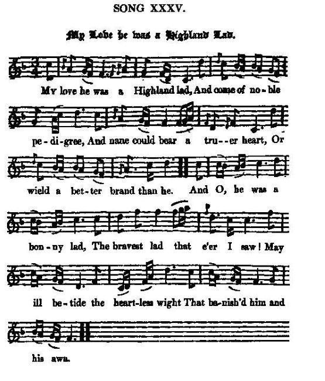

My Love he was a Highland Lad
Mon bien-aimé des Hautes Terres
Author unknown
Tune - Mélodie"My Love he was a Highland Lad"
from Hogg's "Jacobite Reliques" N°35
Sequenced by Christian Souchon


|
MY LOVE HE WAS A HIGHLAND LAD.
1. My love he was a Highland lad, And come of noble pedigree, And nane could bear a truer heart, Or wield a better brand than he. And O, he was a bonny lad, The bravest lad that e'er I saw ! May ill betide the heartless wight That banish'd him and his awa. 2. But had our good king kept the field, When traitors tarrow'd at the law, There hadna been this waefu' wark, The weariest time we ever saw. My love he stood for his true king. Till standing it could do nae mair: The day is lost, and sae are we; Nae wonder mony a heart is sair. 3. But I wad rather see him roam An outcast on a foreign strand, And wi' his master beg his bread, Nae mair to see his native land, Than bow a hair o' his brave head To base usurper's tyranny; Than cringe for mercy to a knave That ne'er was own'd by him nor me. 4. But there's a bud in fair Scotland, A bud weel kend in glamoury; And in that bud there is a bloom, That yet shall flower o'er kingdoms three; And in that bloom there is a brier, Shall pierce the heart of tyranny, Or there is neither faith nor truth, Nor honour left in our country. Source: Jacobite Minstrelsy, published in Glasgow by R. Griffin & Cie and Robert Malcolm, printer in 1828. |
MON BIEN-AIME DES HAUTES TERRES
1. Mon bien-aimé, des Hautes Terres, Est issu de noble famille, Il n'est point de cœur plus sincère Nul escrimeur n'est plus agile. Nul homme n'est plus enjôleur, Nul être au monde plus hardi! Malheur à toi, l'homme sans cœur, Qui les bannis son maître et lui. 2. Si le monarque eût su tenir Tête à ceux qui violaient la loi, Leur complot n'eût pu s'accomplir, Ni poindre cette ère d'effroi. Mon bien-aimé pour le défendre, Ce vrai roi, lutta jusqu'au bout Quand les armes il fallut rendre, Ce fut l'âme emplie de dégoût. 3. Mais j'aime mieux savoir qu'il erre En exil aux pays lointains, Mendiant le pain de la misère, Même si l'exil est sans fin; Que le voir, inclinant la tête, S'abaisser devant un faux roi, Avec d'humiliantes requêtes, Lui qui n'a sur nous aucun droit. 4. Mais voici qu'en la belle Ecosse, Paré de gloire, va s'ouvrir Un bouton dont la fleur enclose Aux trois royaumes va fleurir. Que cette rose ait des épines Pour percer le cœur des tyrans, Sinon c'en est fait, peuple indigne, De l'honneur et la foi d'antan! (Trad. Christian Souchon(c)2010) |
|
This song breathes a mixture of love and politics that greatly increases the interest of it. It is probably a female production; for, as the "Ettrick Shepherd" (James Hogg) remarks, " the sympathy, delicacy, and vehemence which it manifests, are strongly characteristic of the female mind, ever ardent in the cause it espouses."
(Quoted from "Jacobite Minstrelsy") |
(Tiré de "Jacobite Minstrelsy") |
|
|
|